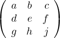

| Up | Next | Prev | PrevTail | Tail |
The operator length applied to a matrix returns a list of the number of rows and columns in the matrix. Other operators useful in matrix calculations are defined in the following subsections. Attention is also drawn to the LINALG (section 20.32) and NORMFORM (section 20.37) packages.
The operator det is used to represent the determinant of a square matrix expression. E.g.,
is a scalar expression whose value is the determinant of the square of the matrix Y, and
is a scalar expression whose value is the determinant of the matrix
|
 |
Determinant expressions have the instant evaluation property. In other words, the statement
sets the value of the determinant to 2, and does not set up a rule for the determinant itself.
mateigen calculates the eigenvalue equation and the corresponding eigenvectors of a matrix, using the variable id to denote the eigenvalue. A square free decomposition of the characteristic polynomial is carried out. The result is a list of lists of 3 elements, where the first element is a square free factor of the characteristic polynomial, the second its multiplicity and the third the corresponding eigenvector (as an n by 1 matrix). If the square free decomposition was successful, the product of the first elements in the lists is the minimal polynomial. In the case of degeneracy, several eigenvectors can exist for the same eigenvalue, which manifests itself in the appearance of more than one arbitrary variable in the eigenvector. To extract the various parts of the result use the operations defined on lists.
Example: The command
gives the output
This operator takes a single matrix argument and returns its transpose.
The operator trace is used to represent the trace of a square matrix.
The operator cofactor returns the cofactor of the element in row row and column column of the matrix matrix. Errors occur if row or column do not simplify to integer expressions or if matrix is not square.
nullspace calculates for a matrix A a list of linear independent vectors (a basis) whose linear combinations satisfy the equation Ax = 0. The basis is provided in a form such that as many upper components as possible are isolated.
Note that with b := nullspace a the expression length b is the nullity of A, and that second length a - length b calculates the rank of A. The rank of a matrix expression can also be found more directly by the rank operator described below.
Example: The command
gives the output
In addition to the REDUCE matrix form, nullspace accepts as input a matrix given as a list of lists, that is interpreted as a row matrix. If that form of input is chosen, the vectors in the result will be represented by lists as well. This additional input syntax facilitates the use of nullspace in applications different from classical linear algebra.
Syntax:
rank calculates the rank of its argument, that, like nullspace can either be a standard matrix expression, or a list of lists, that can be interpreted either as a row matrix or a set of equations.
Example:
returns the value 2.
| Up | Next | Prev | PrevTail | Front |